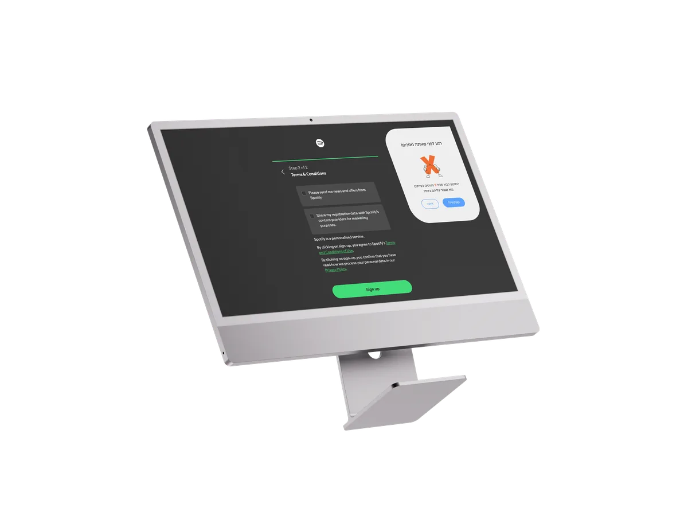
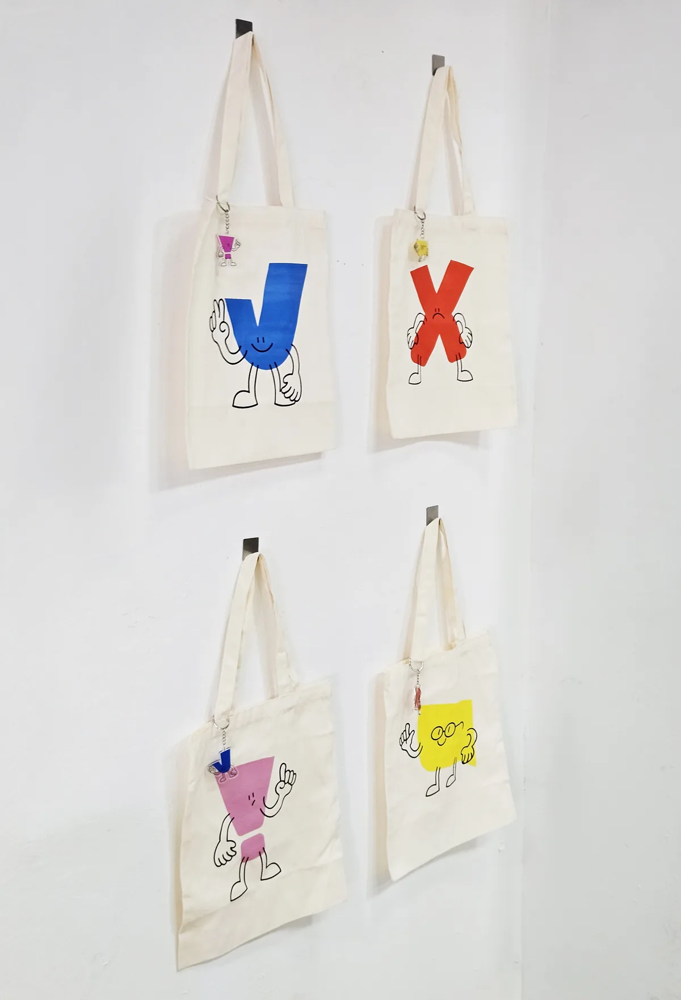
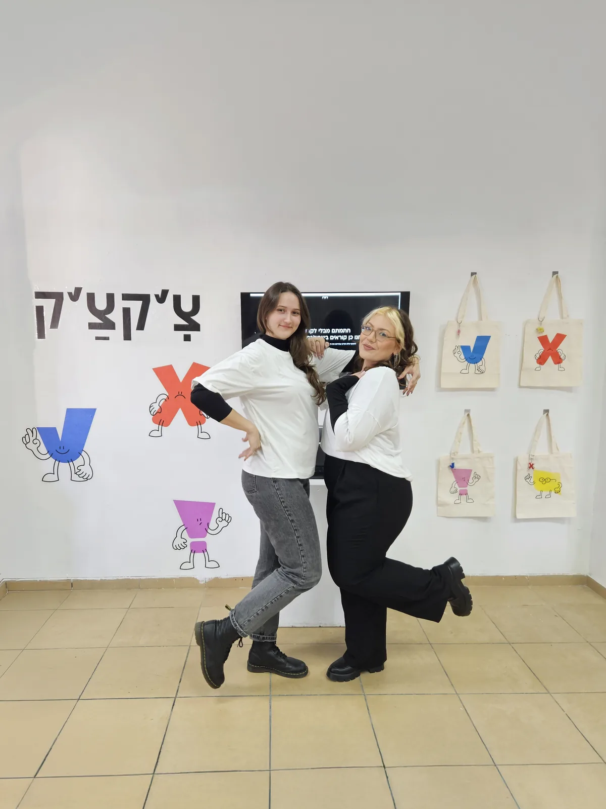
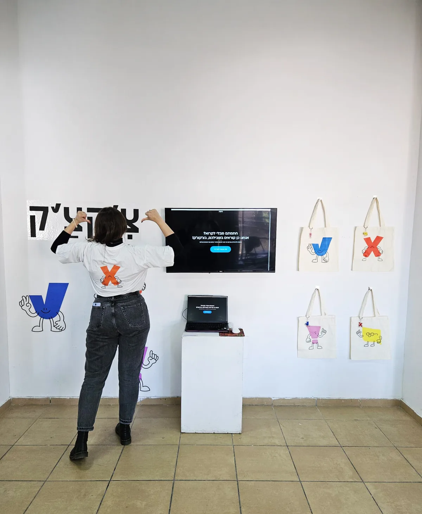

צ'קצ'ק
תוסף דפדפן שקורא את תנאי השימוש בשבילכם
הבריף
אם היינו יכולות לשנות את העולם באמצעות העיצוב שלנו, מה היינו עושות? בחרנו להתמודד עם אחד ההרגלים הנפוצים ביותר ברשת: לסמן "קראתי ואני מסכים/ה" על תנאי שימוש שאף אחד לא באמת קורא.
הרעיון
חתמתם בלי לקרוא? אנחנו קוראים בשבילכם. צ'קצ'ק הוא תוסף לדפדפן שקורא את התקנון עבור המשתמש ומסכם את מה שחשוב לדעת. אחרי מחקר שוק ושאלונים שעזרו לנו להבין לעומק את היחס של אנשים לתנאי שימוש, פיתחנו שפה חזותית קלילה ומשעשעת, שהופכת נושא יבש ומאיים לנגיש. בלב המיתוג עומדות דמויות מאוירות שנבנו מסימנים מוכרים: וי, איקס, סימן קריאה ובועת דיבור.
תוצרים
- לוגו ודמויות מאוירות
- הדמיית ממשק התוסף
- דף נחיתה
- סרטון תדמית
- תיקים, חולצות ומחזיקי מפתחות
- מדבקות קיר והצבה בתערוכת ההגשה
סרטון התדמית (נגן עם קול)
(ממתין לקובץ בגרסה של 1280px)
(ממתין לקובץ בגרסה של 1280px)


